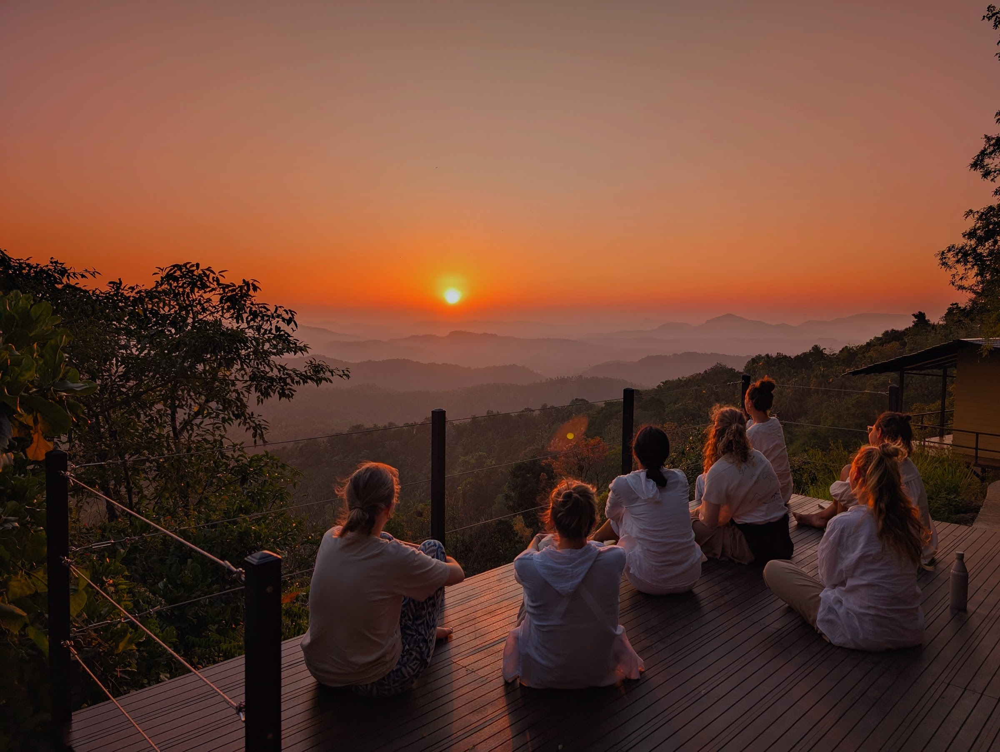
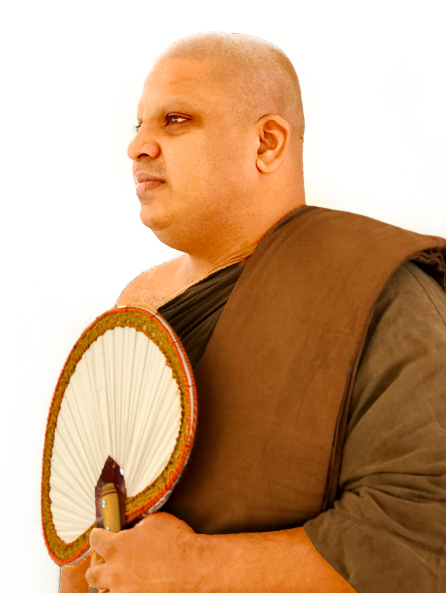
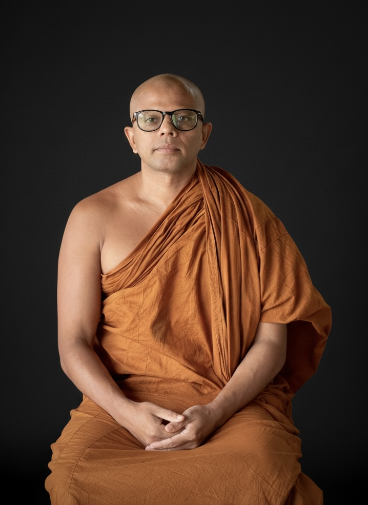

රිදීකන්ද ආරණ්ය සේනාසනය
උඩස්ගිරිය · මාතලේ · ශ්රී ලංකා
ආරණ්ය සේනාසනය
රිදීකන්ද ආරණ්යය සේනාසනය, මාතලේ දිස්ත්රික්කයේ යටවත්ත ප්රාදේශීය ලේකම් කාර්යාලට අයත් උඩස්ගිරිය ග්රාමයට යාබදව ඉතා මනරම් කඳු මුදුනක පිහිටියා වූ භාවනා යෝගීන්ගේ තෝතැන්නකි. එහි වූ සෞම්ය දේශගුණය, සීතල සහ සෙවණ, භාවනා යෝගී භික්ෂුන් වහන්සේලා මෙන්ම, උපාසක උපාසිකාවන්ගේ සිත මෙන්ම කයටද ගෙන දෙන්නේ සුවපත් භාවයකි.
මිහිඳු මහ රහතන් වහන්සේගෙන් ඇරඹුණු ලක්දිව ථෙරවාද බුදුසසුන අද දක්වා නොනැසී පවත්වා ගෙන එන ගමනේදී, වළගම්බා රජ සමයේ බැමිණිටියා සාය නම් අතිශය දරුණු සාගතය නිසා එතෙක් වාචෝද්ගතව පවත්වාගෙන ආ තෙවළා බුදුවදන අභාවයට යා නොදී, කඳු රටට වැඩම කොට පෙළ දහම වාචෝද්ගත කොට අස්වසමින් රැක ගැනීමට දිරි දැරූ ඒ මහා සංඝරත්නය, මාතලේ අළු විහාරයේ දී ධර්මයේ චිරස්ථිතිය පිණිස ත්රිපිටකය ග්රන්ථාරූඪ කළහ. එවන් සංඝ පරපුරකින් පෝෂණය වූ භික්ෂු පරම්පරාවක් ලෙස උත්තම ශාසනයේ ප්රතිපත්තිගරුකව කටයුතු කරමින් ආරණ්යය වාසීව වැඩසිටින භික්ෂුන් වහන්සේලා මෙම රිදීකන්ද ආරණ්යය සේනාසනය තුළ වැඩසිටියි. තමන් වහන්සේලාගේ අධ්යාත්මික ගුණ වගාවන් වර්ධනය කරගනිමින්, ධර්ම මාර්ගය තුළ ගමන් කරන භාවනායෝගීන්ටත් මාර්ගෝපදේශනය ලබා දෙමින්, බුද්ධ දර්ශනය මෙරට මෙන්ම ජාත්යන්තරය තුළද ප්රචලිත කිරීමේ වටිනා ශාසන මෙහෙවරයක වර්තමානය තුළ කටයුතු කරමින් වැඩ වාසය කරයි.
ත්රිපිටක ගත ධර්ම විනය මනාකොට අධ්යයනය කොට එය ප්රායෝගිකව ක්රියාත්මක කරමින්, බුද්ධ දර්ශනයේ ඉදිරිපත් කරන උතුම් ඵල නෙළාගැනීමේ ක්රමානුකූල මාර්ගයක ගමන් කිරීම පිණිස රිදීකන්ද ආරණ්යය සේනාසනය ධර්මකාමීන්ට මාර්ගෝපදේශනය ලබා දෙයි. බුද්ධ දර්ශනයේ හර ධර්මතා, සිද්ධාන්ත මනා කොට විවරණය කොට ලබා දෙන්නා වූ ධර්ම දැනුම, ප්රායෝගිකව භාවනා කර්මස්ථානයන් නිර්දේශ කරමින් ප්රත්යක්ෂ අවබෝධයන් කරා කෙනෙකු ගෙන ඒම රිදීකන්ද ආරණ්යය සේනාසනයෙහි සුවිශේෂීත්වයයි. ප්රත්යක්ෂ අවබෝධයන් සඳහා උපකාරක ධර්මතා වූ සමථ සහ විදර්ශනා භාවනා දර්ශනයන්ගෙන් සමන්විතව එක් එක් භාවනායෝගියාගේ වර්ධනය මත පදනම් වූ ඉගැන්වීම් සහ මාර්ගෝපදේශයන් ලබා දීමෙන්, නිවැරදිව පියවරෙන් පියවර කෙනෙකුට ආර්ය මාර්ගයේ ගමන් කිරීමට අවකාශ සලස්වයි.

සේනාධිපති · ප්රධාන කම්මට්ඨානාචාර්ය
අති පූජ්ය විද්යාවේදී රාජකීය පණ්ඩිත අනුරාධපුර අරියජීව ස්වාමීන් වහන්සේ
භාවනා උපදේශක — ඕස්ට්රේලියාවේ ගෝල්ඩ් කෝස්ට් බෞද්ධ මධ්යස්ථානය, ශ්රී ලංකාවේ කුරුණෑගල කූන්පොල ශ්රී අභයාරාමය පුරාණ ටැම්පිට විහාරය සහ මාතලේ රිදීකන්ද ආරණ්ය සේනාසනය යන විහාරස්ථානයන්හි ගරු විහාරාධිපති ස්වාමීන් වහන්සේ.
අති පූජ්ය විද්යාවේදී රාජකීය පණ්ඩිත කම්මට්ඨානාචාර්ය අනුරාධපුර අරියජීව ස්වාමීන් වහන්සේ, අස්ගිරි මහා විහාරයේ දී අස්ගිරි මහා විහාර පාර්ශවයේ අනුනායක ආණමඩුවේ සද්ධර්මකීර්ති ශ්රී රතනපාල බුද්ධ රක්ඛිත ධම්මදස්සනාභිධාන නාහිමිපාණන් වහන්සේගේ ශිෂ්යයකු ලෙස උපසම්පදාධූරයට සපැමිණ, වර්තමානයේ කුරුණෑගල කොන්පොල ශ්රී අභිනවාරාමය පුරාණ ටැම්පිට විහාරය, කහහේන ශ්රී අභිනවාරාමය විහාරය සහ උඩස්ගිරිය රිදීකන්ද ආරණ්යයෙහි අධිපතීත්වය හොබවමින් ශාසන මෙහෙවර සිදුකරයි.
සිංහල, පාලි, සංස්කෘත සහ ඉංග්රීසි භාෂාවන්ගේ ප්රවීණත්වයත්, රාජකීය පණ්ඩිත උපාධියත් මෙන්ම වසර ගණනක් තිස්සේ ශ්රීපාදය, අනුරාධපුරය සහ පොළොන්නරුව ආදී ප්රදේශයන්හි වනවාසීව භාවනායෝගීව වැඩවාසය කරමින් ධර්ම අවබෝධයට සහ එහි නිපුණත්වයට පත්වෙමින්, කම්මට්ඨානාචාර්යවරයකු සහ භාවනා ගුරුවරයෙකු ලෙස බොහෝ භාවනායෝගීන්ගේ හිතසුව පිණිස කටයුතු කරයි.
රිදීකන්ද ආරණ්ය සේනාසනයේ සියලු නේවාසික භික්ෂුන් වහන්සේලා සහ භාවනායෝගීන්ගේ වැඩසටහන් මෙහෙයවමින්, බොහෝ පිරිසකගේ ලෝකෝත්තර මාර්ගය මෙන්ම ලෞකික කායික මානසික සුවපත්භාවය පිණිස මාර්ගෝපදේශකත්වය ලබා දෙයි.
එමෙන්ම, බටහිර මනෝවිද්යාව මෙන්ම බෞද්ධ මනෝවිද්යාව පිළිබඳ ක්ෂේත්රයන්හි කටයුතු කරමින් විවිධ සමාජ හා ශාසනික මෙහෙවරයන් වර්තමානයේ සිදුකරමින් වැඩ වාසය කරයි.

භාවනා උපදේශක
පූජ්ය හෝමාගම රේවත ස්වාමීන් වහන්සේ
පාලක / පරිපාලක: රිදීකන්ද ආරණ්ය සේනාසනය (උඩස්ගිරිය, මාතලේ, ශ්රී ලංකා), කලල්ගොඩ සිරි ජයබෝධි මහා විහාරය සහ ලුණුගල සිරි ජයබෝධි විහාරය (ශ්රී ලංකා).දශකයකට ආසන්න කාලයක භාවනා පුහුණුවක් සහ පළපුරුද්දක් ඇති පූජ්ය හෝමාගම රේවත ස්වාමීන් වහන්සේ, සිතේ ගැඹුරු ස්වභාවය, සංඥාව (හැඟීම් දැනීම්) සහ භාවනාව පිළිබඳ ගවේෂණය කිරීම සඳහා තම ජීවිතය කැප කර ඇත. ස්යාමෝපාලි මහා නිකායේ කෝට්ටේ ශ්රී කල්යාණි සාමග්රීධර්ම මහා සංඝ සභාව යටතේ උපසම්පදාව ලැබූ උන්වහන්සේ, පූජ්ය අලකොලගල ඥාණරතන ස්වාමීන් වහන්සේ සහ පූජ්ය අනුරාධපුර අරියජීව ස්වාමීන් වහන්සේගේ මඟපෙන්වීම සහ ශික්ෂණය යටතේ පුහුණුව ලබා ඇත.
රිදීකන්ද ආරණ්ය සේනාසනයේදී, පූජ්ය රේවත ස්වාමීන් වහන්සේ දේශීය මෙන්ම විදේශීය යෝගාවචරයන් උදෙසා සතිපතා, මාසික සහ නේවාසික භාවනා වැඩසටහන් මෙහෙයවනු ලබති. උන්වහන්සේගේ දේශනාවන්, ආධ්යාත්මික වර්ධනය සහ මානසික සුවතාවය ඇති කිරීම සඳහා සකස් කරන ලද සාම්ප්රදායික බෞද්ධ භාවනා ක්රමවේදයන්ගෙන් සමන්විත වේ. මීට අමතරව, ආරණ්ය සේනාසනය තුළ තාවකාලික පැවිදි වැඩසටහන් සංවිධානය කරන උන්වහන්සේ, සහභාගිවන්නන්ට මහණදම් සහ භාවනා පුහුණුවෙහි නිරත වීමට අවස්ථාව සලසා දෙති.
පරිගණක විද්යාව සහ තොරතුරු තාක්ෂණ ක්ෂේත්රය පිළිබඳ ශාස්ත්රීය පසුබිමක් ඇති පූජ්ය රේවත ස්වාමීන් වහන්සේ, තමන් වහන්සේ සතු තාක්ෂණික විශේෂඥතාව ගැඹුරු බෞද්ධ ප්රඥාව සමඟ සුවිශේෂී ලෙස මුසු කරති. භාවනාව, සංජානනය (Cognition) සහ බුදුදහම පිළිබඳ ප්රවීණයෙකු ලෙස, උන්වහන්සේ පැරණි දර්ශනයන් සමකාලීන විද්යාත්මක දෘෂ්ටිකෝණයන් සමඟ මැනවින් සම්බන්ධ කරති. ප්රසිද්ධ කථිකයෙකු ලෙස උන්වහන්සේ සතු පළපුරුද්ද හේතුවෙන් ඉංජිනේරු සහ විද්යාත්මක පසුබිමක් ඇති පිරිස් ඇතුළු විවිධ තරාතිරම්වල ශ්රාවකයන් වෙත තම දේශනා ඉතා සමීපව සහ බලපෑමක් ඇති කළ හැකි අයුරින් සන්නිවේදනය කිරීමට උන්වහන්සේට හැකියාව ලැබී ඇත.
පූජ්ය රේවත ස්වාමීන් වහන්සේ රිදීකන්ද ආරණ්ය සේනාසනය වෙනුවෙන් සිදුකරන මෙහෙවර, බුදුදහම ප්රචාරය කිරීමටත්, මානසික ඔරොත්තු දීමේ හැකියාව නැංවීමටත්, අන්තර්-සංස්කෘතික මෙන්ම අන්තර්-විෂයාත්මක අවබෝධය වර්ධනය කිරීමටත් උන්වහන්සේ තුළ ඇති කැපවීම මැනවින් පිළිබිඹු කරයි.
සම්බන්ධවීම
රිදීකන්ද ආරණ්ය සේනාසනය ආගන්තුක භික්ෂුන් වහන්සේලා, මෙහෙණින් වහන්සේලා, උපාසක, උපාසිකාවන් සඳහා පිළිගන්නා අතර, පහත අරමුණු සාක්ෂාත් කිරීම සඳහා ආරණ්යයට පැමිණිය හැක.
- භාවනා වැඩසටහන් සඳහා සම්බන්ධවීම — කාලසටහන් අනුව යෙදී ඇති භාවනා වැඩසටහන් සමඟ ඉහත සඳහන් ඕනෑම කෙනෙකුට සම්බන්ධ විය හැක. ඒ සඳහා අවශ්ය වැඩසටහනට ලියාපදිංචි වීම තුළින් සම්බන්ධ විය හැක. ඊට අදාළ තොරතුරු සඳහා වෙන් කරවා ගැනීම වෙත පිවිසෙන්න.
- පැය කිහිපයකට හෝ දවසක් භාවනායෝගීව ගත කිරීම සඳහා ද ආරණ්යයට පැමිණිය හැක. ඒ සඳහා කලින් දැනුවත් කර පැමිණීම වඩා යෝග්ය වේ.
- ආරණ්ය සේනාසනයේ වැඩ වාසය කරන භික්ෂුන් වහන්සේලා සහ භාවනා උපදේශකවරුන් හා සම්බන්ධ වීම සඳහා පෙර දැනුම්දීමකින් අවකාශ සලසා ගත හැකිය.
- දානයන් පූජා කිරීම් සඳහා ආරණ්යයට පැමිණිය හැකි අතර, කලින් ඒ සඳහා දින වෙන්කර පැමිණීම අත්යවශ්ය වේ.
- ආරණ්ය සේනාසනයේ ඉදිකිරීම් සඳහා ශ්රමයෙන් දායක වන සැදැහැවත් දායක දායිකාවන්ට, පෙර දැනුම්දීමකින් ශ්රමදාන ආදී ආරණ්යය ඉදිකිරීම් සහ පිරිසිඳු කිරීම් සඳහා සම්බන්ධ විය හැක.
දානය
දානයන් පූජා කිරීම
ආරණ්යයේ වැඩ වාසය කරන භික්ෂුන් වහන්සේලා සහ නේවාසික පුහුණු භාවනායෝගීන්ගේ දානයන් ආරණ්යයේදී සකසා පිළියෙළ කොට පූජා කිරීම සිදුකරයි. මෙම ආරණ්යය පිහිටා ඇති ස්ථානයේ දුෂ්කරතාවය නිසා, බොහෝ විට නේවාසික පුහුණු වැඩසටහන් සඳහා අවශ්ය සියලු දාන අමුද්රව්ය වැඩසටහන ආරම්භයේ දී සූදානම් කොට ආරණ්යය තුළ සකස් කොට පිළිගැන්වීම සිදුකරයි.
නමුත්, නේවාසික පුහුණු වැඩසටහන් නොමැති කාල වකවානු තුළ ආරණ්යයේ වැඩ වාසය කරන භික්ෂුන් වහන්සේලා සඳහා දාන පූජා කිරීම් පෙර දැනුම් දීමකින් පසුව සිදුකළ හැක. දානයන් සැකසීම සඳහා අවශ්ය පහසුකම් මෙන්ම ඒ සඳහා නේවාසික පහසුකම් ද ආරණ්යය තුළ සපයා ඇත.